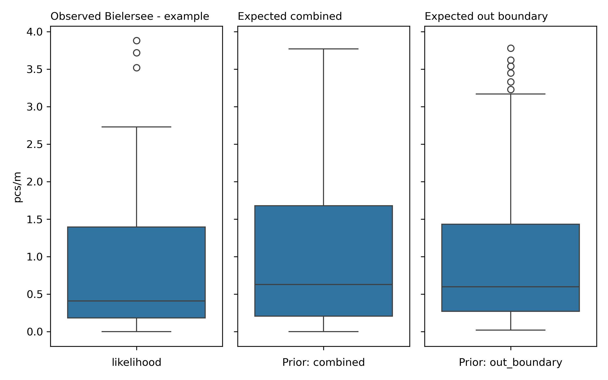

Bielersee - example#
Summary and analysis of observations of trash density: objects related to tobacco and food and drink found in lakes. Report number: Bielersee - example lake 2020-01-01 2021-05-31
Proof of concept: llm assissted reporting grid forecasting example
Executive Summary#
The Bielersee report, covering the period from January 26, 2020, to March 31, 2021, includes data from eight cities: Biel/Bienne, Vinelz, Lüscherz, Nidau, Gals, Erlach, Le Landeron, and Ligerz, with the survey area identified as Aare and one lake, Bielersee. A total of 39 samples were collected, yielding an average of 0.92 pcs/m, a maximum of 3.88 pcs/m, a median of 0.41 pcs/m, and a standard deviation of 1.10 pcs/m. The total number of objects identified was 1,166. The five most common objects were cigarette filters (fail rate: 79.49%, 70.24% of total), and food wrappers (fail rate: 87.18%, 29.76% of total).
Sampling stratification is a method used to ensure that survey samples are representative of the various land-use features surrounding the survey locations. The survey locations were classified as mixed areas since the sum of the proportions of samples for buildings and forests did not exceed 50% in the relevant buffer zones. The highest trash density was found in the ‘forest’ category with 2.00 pcs/m in the 40-60% buffer zone, where 33.3% of the samples were collected. The sampling stratification table helps quantify the relationship between land use and litter density, highlighting areas where trash density is particularly high.
The regression analysis conducted indicated that the Bagging: Gradient Boosting Regression model had the highest R² of 0.30 and a mean squared error (MSE) of 0.72. Feature importance analysis revealed that ‘streets’ (0.274337) and ‘buildings’ (0.218129) were the most significant predictors. Permutation feature importance showed that ‘buildings’ (0.137264) and ‘streets’ (0.0350437) were crucial. Despite these findings, the relatively low R² values suggest that the models only capture a small portion of the variance in the data, indicating limited predictive reliability.
Grid approximation, a Bayesian inference technique, was employed to estimate the conditional probabilities of survey outcomes. The in-boundary and out-boundary priors yielded average pcs/m values of 0.97 and 1.04, respectively, compared to the observed average of 0.92 pcs/m. Both priors suggest an expected increase in trash density, with the out-boundary posterior indicating a higher increase.
Sample results#
The report details administrative boundaries including a total of eight cities: Biel/Bienne, Vinelz, Lüscherz, Nidau, Gals, Erlach, Le Landeron, and Ligerz. The survey area identified is Aare. There is one lake included in the report, which is Bielersee, and no parks are mentioned.
The sampling period spans from January 26, 2020, to March 31, 2021. A total of 39 samples were collected, yielding an average of 0.92 pcs/m, a median of 0.41 pcs/m, and a maximum of 3.88 pcs/m. The standard deviation of the sample data is 1.10, and the total number of objects identified during the survey is 1,166.
The most common objects identified with the greatest quantity were:
Cigarette filters: Fail rate of 79.49%, 70.24% of total, 0.60 pcs/m, total quantity of 819.
Food wrappers (candy, snacks): Fail rate of 87.18%, 29.76% of total, 0.32 pcs/m, total quantity of 347.
The material composition of the objects found was exclusively plastic, comprising 100% of the total identified materials.
Sample results frequently asked questions
Frequently asked questions
What were the ten most common items found?
The two most common items found were as follows:
Cigarette filters: Fail rate of 79.49%, 70.24% of total.
Food wrappers (candy, snacks): Fail rate of 87.18%, 29.76% of total.
(Note: Only two objects met the criteria for reporting.)
Are these objects found on European beaches? If so, is there any data on how many per 100 m of beach?
Yes, these objects are commonly found on European beaches. According to the OSPAR report from 2021, the average number of items found on beaches is reported to be 150 pieces per 100 m. For more details, you can access the report here: OSPAR Beach Litter Report 2021.
What are possible sources of these specific objects?
Possible sources of cigarette filters may include recreational areas such as parks, beaches, and public spaces where smoking occurs. Food wrappers are typically linked to fast food outlets, convenience stores, and picnics, where individuals consume snacks and convenience foods outdoors.
Which three cities had the highest average pcs/m? Which three had the lowest?
The three cities with the highest average pcs/m were:
Biel/Bienne: 1.79 pcs/m
Ligerz: 1.55 pcs/m
Erlach: 0.49 pcs/m
The three cities with the lowest average pcs/m were:
Lüscherz: 0.06 pcs/m
Gals: 0.21 pcs/m
Vinelz: 0.33 pcs/m
| pcs/m | buildings | forest | undefined | streets | public-services | recreation | |
|---|---|---|---|---|---|---|---|
| cluster | |||||||
| 0 | 1,04 | 0,31 | 0,11 | 0,54 | 0,44 | 0,06 | 0,03 |
| 1 | 0,06 | 0,17 | 0,56 | 0,13 | 0,00 | 0,04 | 0,00 |
| 2 | 1,16 | 0,32 | 0,11 | 0,48 | 0,71 | 0,13 | 0,02 |
Sampling stratification#
Sampling stratification is a method used to ensure that survey samples are representative of the various land-use features surrounding the survey locations. In this context, each survey location is surrounded by a buffer zone of 1,500 meters, which includes various land-use features, such as buildings, forests, wetlands, and streets. The proportion of each land use feature within the buffer zone is quantified, allowing researchers to analyze how these features might influence litter density. The survey results are interpreted by examining how trash density varies according to the different land-use conditions present in the buffer zones surrounding each sampled location.
The highest pieces of trash per meter (pcs/m) values in the sampling stratification and trash density table are found in the ‘forest’ and ‘undefined’ columns. For the forest category, the highest value is 2.00 pcs/m, which occurs in the 40-60% buffer zone, where 33.3% of the samples were collected. In the undefined category, the highest value is 1.55 pcs/m, which occurs in the 20-40% buffer zone, where 5.1% of the samples were collected. These values indicate that areas with a higher proportion of forests and undefined land-use features show a significant presence of trash.
To classify the surveyed locations, we examine the proportions of samples collected according to the definitions of urban, rural, and mixed areas. The sum of the proportions of samples for buildings in the rows 60-80% and 80-100% of the sampling stratification table is 7.7% + 0%, which is less than 50%. For forests, the sum of the proportions in the same rows is also 0% + 0%, which is also less than 50%. Thus, we classify the surveyed locations as mixed.
| Proportion of samples collected | |||||||||
|---|---|---|---|---|---|---|---|---|---|
| buildings | wetlands | forest | public-services | recreation | undefined | streets | vineyards | orchards | |
| proportion of buffer | |||||||||
| 0-20% | 17.9% | 100.0% | 38.5% | 100.0% | 100.0% | 53.8% | 20.5% | 100.0% | 100.0% |
| 20-40% | 41.0% | none | 48.7% | none | none | 5.1% | 5.1% | none | none |
| 40-60% | 33.3% | none | 12.8% | none | none | 41.0% | 30.8% | none | none |
| 60-80% | 7.7% | none | none | none | none | none | 35.9% | none | none |
| 80-100% | none | none | none | none | none | none | 5.1% | none | none |
| Pieces of trash per meter | |||||||||
|---|---|---|---|---|---|---|---|---|---|
| buildings | wetlands | forest | public-services | recreation | undefined | streets | vineyards | orchards | |
| proportion of buffer | |||||||||
| 0-20% | 0,48 | 0,92 | 0,36 | 0,92 | 0,92 | 1,32 | 0,48 | 0,92 | 0,92 |
| 20-40% | 0,33 | none | 1,60 | none | none | 1,54 | 0,21 | none | none |
| 40-60% | 2,00 | none | 0,06 | none | none | 0,33 | 0,33 | none | none |
| 60-80% | 0,48 | none | none | none | none | none | 1,88 | none | none |
| 80-100% | none | none | none | none | none | none | 0,42 | none | none |
Sampling stratification frequently asked questions
Frequently asked questions
What does the sampling stratification table tell us?
The sampling stratification table provides insight into the distribution of samples collected based on different land-use features. For example, in the buildings category, the highest average pcs/m is 2.00, observed in the 40-60% buffer zone, where 33.3% of the samples were taken. This indicates that as the proportion of buildings in the buffer zone increases to 40-60%, there is a corresponding increase in trash density. Similarly, in the undefined category, the average pcs/m is 1.55, found in the 20-40% buffer zone, where 5.1% of the samples were collected. This suggests that undefined land-use areas also exhibit a notable amount of trash. These examples illustrate how the table quantifies the relationship between land use and litter density, highlighting locations where trash density is particularly high.
How can the information in the sampling stratification and trash density table help identify areas of concern?
The information provided in the sampling stratification and trash density table is crucial for identifying areas of concern regarding litter management and environmental health. By linking trash density with specific land-use features, it becomes possible to pinpoint locations that are particularly affected by litter. For instance, areas with a high density of buildings may indicate urban environments where litter is more prevalent. Understanding these relationships allows policymakers and environmental managers to devise targeted interventions in high-density litter areas, ultimately improving local environmental quality and public health.
Under what land-use conditions would a surveyor expect to find the most trash?
Surveyors would expect to find the most trash in areas characterized by a higher proportion of buildings and undefined land use. Specifically, the sampling stratification and trash density table indicates that the highest average pcs/m for buildings is 2.00, observed in the 40-60% buffer zone, where 33.3% of the samples were collected. For undefined land use, the average pcs/m is 1.55, found in the 20-40% buffer zone, where 5.1% of the samples were taken. These findings suggest that as the proportions of buildings and undefined land increase, the density of trash also tends to rise, indicating that these land-use conditions are more prone to litter accumulation.
Given the results in the sampling stratification table, were these surveys collected in mostly urban environments or forested?
The surveys were not collected in predominantly urban or forested environments. The proportion of samples for buildings in the relevant buffer zones sums to 7.7% (60-80%) + 0% (80-100%), which is less than 50%. Similarly, the sum for forests is 0% (60-80%) + 0% (80-100%). Therefore, these results classify the surveyed locations as mixed, indicating a more diverse land-use profile rather than a concentration in urban or forested areas.
Linear and ensemble methods#
Cluster analysis, specifically K-Means clustering, is a statistical method used to categorize data points into distinct groups based on their similarities. It works by partitioning the dataset into K predefined clusters, with each data point assigned to the cluster whose centroid (mean) is closest to it. The goal is to minimize the variance within each cluster while maximizing the variance between clusters.
In the Bielersee example, the cluster with the highest average pcs/m was Cluster 2, with an average of 1.16 objects per meter of beach. The composition of land use values in this cluster was as follows: buildings accounted for 0.32 (32%), forests for 0.11 (11%), and undefined land use for 0.48 (48%) of the buffer zone.
Linear regression is a statistical method that models the relationship between a dependent variable and one or more independent variables by fitting a linear equation to the observed data. The basic assumptions of linear regression include linearity (the relationship between variables is linear), independence (the residuals are independent), homoscedasticity (constant variance of the residuals), and normality (the residuals should be normally distributed).
Ensemble regression refers to a combination of multiple regression models to improve predictive performance. It includes methods like Bagging and Boosting, which aggregate predictions from various models to produce a more robust estimate. The basic assumptions of ensemble regression methods depend on the individual models used, but generally, they assume that the models have some level of predictive power and that combining them will reduce variance and/or bias.
The regression analysis conducted indicated that the model with the highest R² was the Bagging: Gradient Boosting Regression, which had an R² of 0.30 and a mean squared error (MSE) of 0.72. Given these results, the conclusions that can be drawn suggest that while the model captures some of the variance in the data, the R² value indicates that only about 30% of the variability in the response variable can be explained by the model. The relatively low MSE also suggests that predictions made using this model may not be highly reliable, as they could vary significantly from the actual values.
Linear methods frequently asked questions
Frequently asked questions
What were the r² and MSE of each test?
The R² and MSE for each regression model tested are as follows:
Linear Regression: R² = -3.37, MSE = 4.51
Random Forest Regression: R² = 0.20, MSE = 0.83
Gradient Boosting Regression: R² = 0.30, MSE = 0.73
Theil-Sen Regressor: R² = 0.01, MSE = 1.02
Bagging: Gradient Boosting Regression: R² = 0.30, MSE = 0.72
Voting: R² = -0.11, MSE = 1.14
Given the r² and MSE of the different methods employed, how reliable do you think predictions would be based on these models?
The predictions based on these models generally exhibit low reliability. The negative R² values for some models indicate poor fit, suggesting that these models do not effectively explain the variability in the data. The best-performing model, Bagging: Gradient Boosting Regression, has a modest R² of 0.30, indicating that it explains only a small portion of the variance. The MSE values further suggest that there could be considerable error in the predictions.
Can any conclusions be drawn from these results?
Yes, the results suggest that while some regression models can provide insights, the overall predictive power is limited. The highest-performing model explains only 30% of the variance, indicating that additional variables or alternative modeling approaches may be necessary to improve prediction accuracy.
According to the cluster analysis, what is the cluster that has the greatest average pcs/m? What is the distribution of land use values within the cluster?
The cluster with the greatest average pcs/m is Cluster 2, which has an average of 1.16 objects per meter of beach. The distribution of land use values within this cluster is as follows: buildings account for 32% of the buffer zone, forests account for 11%, and undefined land use occupies 48% of the buffer.
Forecasts and methods#
A grid approximation is a statistical technique used to estimate the conditional probabilities of outcomes based on prior observations and new data. It constructs a grid that spans the range of possible values, assessing how likely it is for a survey result to exceed or equal each value on the grid. This is achieved through a Bayesian inference approach, where prior distributions (based on historical data) are updated with new likelihood data derived from the specific observations being analyzed.
An inference table is a structured format that displays prior and posterior distributions, providing a clear overview of the statistical characteristics of the data. The prior represents the information available before observing the new data, while the posterior is the updated belief after incorporating the new observations. In the context of this report, the priors used are the “in-boundary” and “out-boundary” datasets. The average cosine similarity score of the prior samples in both cases is 0.98.
For each prior in the report, the results are as follows:
In-boundary prior: Average pcs/m = 0.97, Median pcs/m = 0.60
Out-boundary prior: Average pcs/m = 1.04, Median pcs/m = 0.63
When comparing the posterior distributions to the observed results, the observed average pcs/m is 0.92. The in-boundary posterior average is 0.97, which shows an increase of 0.05 compared to the observed average. In contrast, the out-boundary posterior average is 1.04, indicating an increase of 0.12. Given the standard deviations of the in-boundary (0.97) and out-boundary (1.01) distributions, it can be expected that an increase would be noticed, especially when taking more samples.
If a person takes one sample, the likelihood of noticing an increase or decrease from the observed results is fairly low due to the variability inherent in the data. However, if two samples are taken, the likelihood of detecting an increase or decrease becomes higher since the combined data can better reflect the underlying distribution trends.

Grid approximation frequently asked questions
Frequently asked questions
1. Why is grid approximation a reasonable modeling technique given the data?
Grid approximation is suitable because the observed data shows a mean of 0.92 and a median of 0.41, indicating that the data is likely not normally distributed (the mean is greater than the median). This suggests a skewness in the data distribution. If the data were normally distributed, predictions made with grid approximation would align closely with those from traditional normal distribution methods. However, given the observed skew, the predictions may vary significantly, highlighting the importance of using grid approximation to account for potential non-normal characteristics in the data.
2. Do you have an example of other fields or domains that use grid approximation or Bayesian methods?
Grid approximation and Bayesian methods are widely used in various fields, including environmental science for ecological modeling, finance for risk assessment and portfolio management, and medical statistics for clinical trial analysis. These methods are valuable for updating beliefs based on new evidence in these domains.
3. If the data is normally distributed, would the predictions from the grid approximation and the predictions from the normal distribution be different? If so, in what way?
If the data were normally distributed, the predictions from the grid approximation and the normal distribution would typically converge, leading to similar estimates of probabilities for outcomes. However, grid approximation can provide a more nuanced representation of the data, particularly in cases where the distribution is not strictly normal, allowing for better handling of skewness or kurtosis.
4. What is the difference between grid approximation and linear or ensemble regression?
Grid approximation focuses on estimating probabilities of outcomes based on distributions and prior knowledge, while linear regression models the relationship between variables using a linear equation. Ensemble regression combines multiple models to improve prediction accuracy, often aggregating their predictions. Grid approximation, by contrast, does not necessarily rely on the assumptions of linearity and can provide insights into non-linear relationships.
5. With which posterior do we expect to find most? The least?
We expect to find most of the samples within the out-boundary posterior, as it predicts a higher average pcs/m of 1.04 compared to the in-boundary posterior, which averages 0.97. Consequently, the out-boundary posterior captures a broader range of observations that likely reflect higher trash density than the in-boundary samples.
6. If the in-boundary grid approximation predicts an increase or decrease, what does that say about the other samples from within the boundary?
If the in-boundary grid approximation predicts an increase, it implies that elevated values were likely observed in other locations within the geographic boundary compared to the likelihood. This suggests that the trend observed is consistent across the samples taken from that area.
7. If the out-boundary grid approximation predicts an increase or decrease, what does that say about the other samples from outside of the boundary?
If the out-boundary grid approximation predicts an increase, it indicates that locations outside the designated region likely had elevated values when compared to the likelihood. This suggests that the trash density may be higher on average in areas outside the boundary, influencing the posterior estimation.
8. How different are the expected results from the observed results? Should an increase or decrease be expected?
The observed average pcs/m is 0.92. The in-boundary posterior average of 0.97 represents an increase of 0.05, while the out-boundary posterior average of 1.04 indicates an increase of 0.12 compared to the observed average. Given these differences, both the in-boundary and out-boundary results suggest that an increase is expected in future observations.
Consolidated results : city, canton, survey area#
| city | quantity | pcs/m |
|---|---|---|
| Biel/Bienne | 1'001 | 1,79 |
| Erlach | 28 | 0,49 |
| Gals | 8 | 0,21 |
| Le Landeron | 14 | 0,38 |
| Ligerz | 24 | 1,54 |
| Lüscherz | 17 | 0,06 |
| Nidau | 15 | 0,60 |
| Vinelz | 59 | 0,33 |
| canton | quantity | pcs/m |
|---|---|---|
| Bern | 1'152 | 0,94 |
| Neuchâtel | 14 | 0,38 |
| parent_boundary | quantity | pcs/m |
|---|---|---|
| aare | 1'166 | 0,92 |
Inventory#
| quantity | pcs/m | % of total | sample_id | fail rate | object |
|---|---|---|---|---|---|
| 819 | 0,60 | 0,70 | 39 | 0,79 | Cigarette filters |
| 347 | 0,32 | 0,30 | 39 | 0,87 | Food wrappers; candy, snacks |